Hadoop版本:Hadoop-1.2.1
参考：《Hadoop技术内幕-深入解析Hadoop Common和HDFS架构设计与实现原理》,后文简称技术内幕
RPC中用到的通道和选择器另见通道和选择器，缓冲区另见缓冲区,以及序列化(主要是ObjectWritable)另见序列化
Hadoop RPC作为Hadoop节点间底层通信机制，简单来说便是客户端和服务器两者协商使用一个接口(以后称为协议)，客户端通过该接口的一个代理发送接口
内方法的调用请求，请求由代理的调用处理器通过网络发送到服务器(本机的另一个进程当然也可以)，而服务器包含有该接口的实现，服务器从网络中接收到调用
请求后，调用接口实现类指定方法，调用结果通过网络发送回客户端代理，代理转发给客户端，完成远程调用过程。
Hadoop RPC相关的代码在org.apache.hadoop.ipc包中，主要包括Client,Server,RPC类和相关辅助类。
辅助类
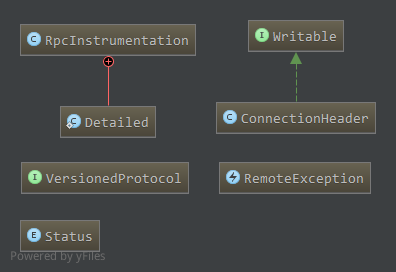
RPCInstrumentation，为度量相关类，管理一些统计信息。ConnectionHeader，为连接头，每一个连接对应一个连接头，在建立连接时由客户端发送给服务器，主要包括该连接使用的协议(接口),用户信息，鉴权方法等。
服务端通过该连接头相应的创建一个服务器端的连接对象，两个连接对象处理该连接上的通信，更具体见后面分析。VersionedProtocol，为RPC所有接口的父类，支持远程过程调用的接口必须继承该接口，接口含有一个方法:1
public long getProtocolVersion(String protocol, long clientVersion) throws IOException;
获取服务器端协议
protocol对应的版本号，主要用于验证客户端协议和服务端协议版本是否匹配。RemoteException，远程异常，用于客户端，表示远程过程调用中的错误。Status，是一个枚举类，定义了远程过程调用的返回结果，包括成功，错误和致命错误三种情况:1
2
3
4
5
6
7enum Status {
SUCCESS (0),
ERROR (1),
FATAL (-1);
int state;
private Status(int state) { this.state = state; }
}
Client
Client相关类如下:
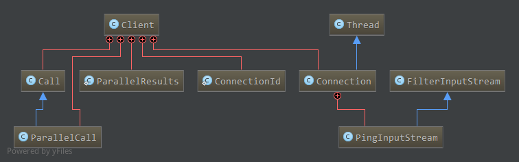
成员属性
主要成员属性如下:
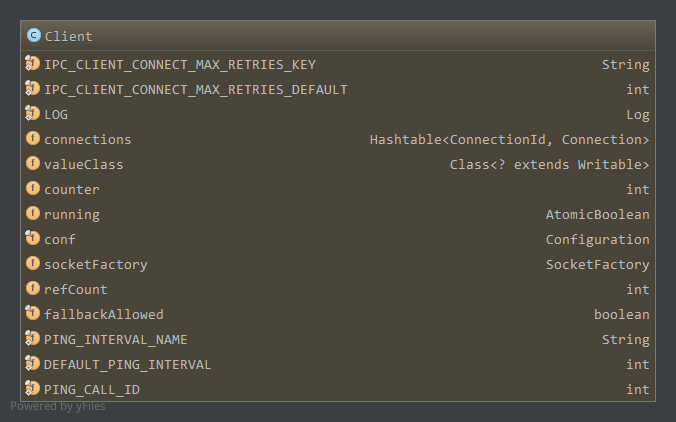
IPC_CLIENT_CONNECT_MAX_RETRIES_KEY，连接服务器失败最大重试次数，配置项ipc.client.connect.max.retries，缺省为IPC_CLIENT_CONNECT_MAX_RETRIES_DEFAULT(10)。connections,该客户端上所有的连接，键为连接的标识ConnectionId，具体见下，值为对应的连接Connection，具体见下。主要用于连接复用，
当新请求的连接和目前维护的连接标识一样是，直接使用原来的连接，而不是创建新的连接。valueClass，继承自Writable，对应为远程调用返回值类型，即服务器端序列化数据的反序列化类型，创建该类对象，然后反序列化服务器端发送
过来的序列化数据即为远程方法调用的返回值对象。counter,调用Call对象成员属性id的递增计数器，客户端的方法调用对应一个Call对象，Call对象的成员id用于标识这个Call对象，使用counter
递增每一次调用的id。running，客户端的运行状态。conf,客户端的配置信息，具体见ConfigurationsocketFactory，客户端对应的配置工厂，用于创建通信用的socket，一般为默认socket工厂。refCount，客户端的引用计数。PING_INTERVAL_NAME,ping周期的配置项，对应为ipc.ping.interval，默认值DEFAULT_PING_INTERVAL(1min)。若客户端在读取服务器端的
返回值响应超时，则会周期性的发送值为PING_CALL_ID(-1)的ping消息给服务器以维持连接。
Client包含了很多内部类。
Client.Call
对应客户端的一个方法调用，成员属性如下:
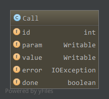
id为Call的标识，构造Call对象时由客户端的counter指定，每构造一个Call对象counter加1。param，包含方法调用的基本信息，包括方法名，参数类型和对应的参数值，目前为RPC.Invocation类型。value，远程调用返回值类型，使用该对象的readFields方法反序列化服务器发送过来的远程调用返回值序列化数据，便得到远程调用结果，目前为ObjectWritable类型。error,远程调用发生错误时，服务器端会发送异常类型和对应的异常实例，因此error便保存了远程调用异常信息。done，该调用是否完成，当value或error不为null时，调用完成，done为true。调用要么成功返回，要么异常。
创建Call对象时，param存储远程调用对应的方法，方法参数类型以及对应的方法参数(为什么不包含协议，因为一个连接关联一个协议)，将param序列化
发送到服务器，服务器调用协议实现的方法后序列化发送回给客户端，客户端读取响应时，首先读取状态，若成功，通过value反序列化即为调用结果，若
有错误，通过error反序列化为异常信息，若为致命错误，关闭连接，具体见后面详细分析。
Client.ParallelCall
为Client.Call的子类，用于并行调用多个远程服务器上的方法。并行向多个远程服务器发送一组方法调用请求，并等待所有这些请求都得到相应应答，或者
超时。
除了父类的成员，还包含了一个ParallelResults类型的成员results保存并行请求的结果，以及当前调用在并行调用中的索引index。ParallelResults包含以下成员:1
2
3private Writable[] values;//并行结果
private int size;//并行结果数量
private int count;//当前已完成的并行调用数量
当该调用完成时，调用callComplete()方法1
protected void callComplete() { results.callComplete(this);}
而ParallelResults中的callComplete方法如下:1
2
3
4
5
6public synchronized void callComplete(ParallelCall call) {
values[call.index] = call.value; // store the value
count++; // count it
if (count == size) // if all values are in
notify(); // then notify waiting caller
}
即更新第index结果值，增加已完成的调用数量，若所有调用已完成，则通知等待的调用者。
Client.ConnectionId
ConnectionId是客户端连接的标识，用于连接复用，客户端所有的连接保存在Client成员connections中(见上)。客户端到服务器的连接由
而不用创建新的连接。
ConnectionId成员属性如下:
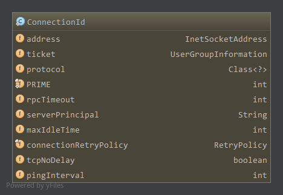
address，对应为服务器地址，包括服务器的”IP地址+端口”或”主机名+端口”信息；ticket，包含了用户和用户所在组的信息；protocol，客户端和服务器通信以来的协议(接口)；PRIME，素数16777619；rpcTimeout,read超时时间，默认为0，为0时使用pingInterval。不为0时，用此值覆盖pingInterval。serverPrincipal，服务器主体信息，用于鉴权；maxIdleTime，最大空闲时间，一个连接上没有通信活动的时间超过该时间，则会关闭。配置ipc.client.connection.maxidletime,默认10s。connectionRetryPolicy，连接失败重试策略，包括失败后的重试次数和每次重试间隔，默认情况下重试次数10，间隔为1s；tcpNoDelay,决定是否关闭Nagel算法，true时关闭，false开启。开启时对于小包会暂存在缓冲区，等待一段时间尽可能积累更多的包再发送；pingInterval，read操作超时时发送ping数据的间隔，配置项ipc.ping.interval默认1min。当rpcTimeout不为0时，使用rpcTimeout覆盖此值。
主要方法getConnectionId，通过指定的address，ticket，protocol和配置conf创建ConnectionId对象。
Client.Connection
为客户端这边的一个连接，由上，客户端所有连接信息保存在客户端的connections成员中。
一个连接的成员属性如下:
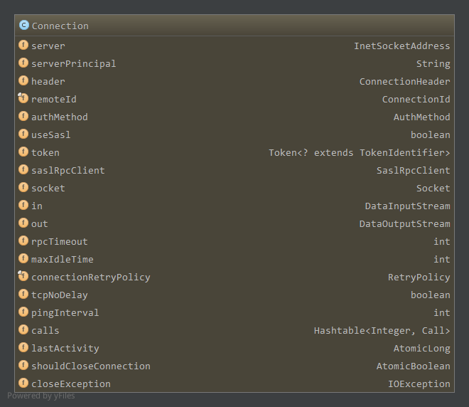
server，远端服务器地址，包括服务器地址(IP或主机名)和端口；serverPrincipal，服务器主体信息，用于鉴权；header，连接头信息，主要包括协议，用户，鉴权方法等信息，一个连接对应一个连接头，在建立连接时发送到服务器；remoteId，连接的标识；authMethod,鉴权方法，枚举类型，包括SIMPLE(80)，KERBEROS(81)，DIGEST(82)三种，建立连接时发送对应的字节码到服务器；socket，创建的socket对象；in，输入流，其实是Connection.PingInputStream，read操作超时时会周期性发送ping到服务器端，以保持连接状态；out,输出流；rpcTimeout,同ConnectionId；maxIdleTime，同ConnectionId；connectionRetryPolicy，连接重试策略，默认情况下，连接服务器超时后，会重试10次，每次间隔1s；tcpNodelay，同ConnectionId；pingInterval，同ConnectionId；calls，连接上所有未完成的远程方法调用，接收到返回值时移除。键为Client.Call对象的id，值为对应的Client.Call对象；lastActivity，上次活动时间，每次读取到数据或发送了ping时更新，读数据超时时也是根据该值和ping周期来判断是否发送ping；shouldCloseConnection，是否应该关闭连接；closeException，关闭连接时的异常；
Connection是线程，关于Connection的操作以及线程主流程，见后面具体过程分析。
Client.Connection.PingInputStream
实际为客户端连接Client.Connection对应的输入流，在read操作超时时，异常中调用handleTimeout，而处理超时中，如果连接未关闭则判断lastActivity和发送ping的时间间隔，向服务器发送ping，以维持连接。
就是在正常的读操作过程中添加了超时处理逻辑，具体见后分析。
Server
Server主要包括监听器Listener，处理器Handler和响应器Responder。
到来的连接由监听器处理，创建对应连接，并对请求的调用封装成Server.Call对象，放入阻塞队列callQueue中，处理器从阻塞队列中取出待处理的请求，
调用本地实现的方法进行处理，处理结果或者直接发送回客户端或者放入连接的响应队列responseQueue中，由响应器进行处理，具体哪种方式取决于
响应队列中待发送响应的数目。
这里使用了Java NIO中的通道和选择器配合，通道分别在选择器上注册accept，read和write操作，关于通道和选择器另见通道和选择器。
相关类如下:
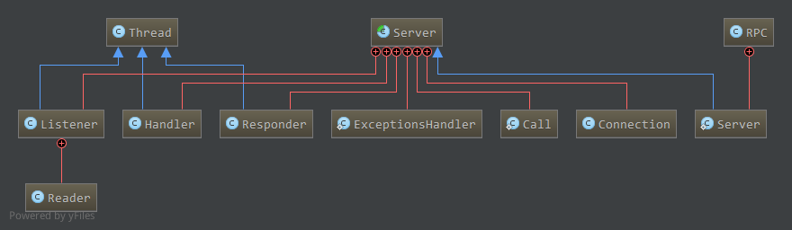
成员属性
主要成员属性如下:
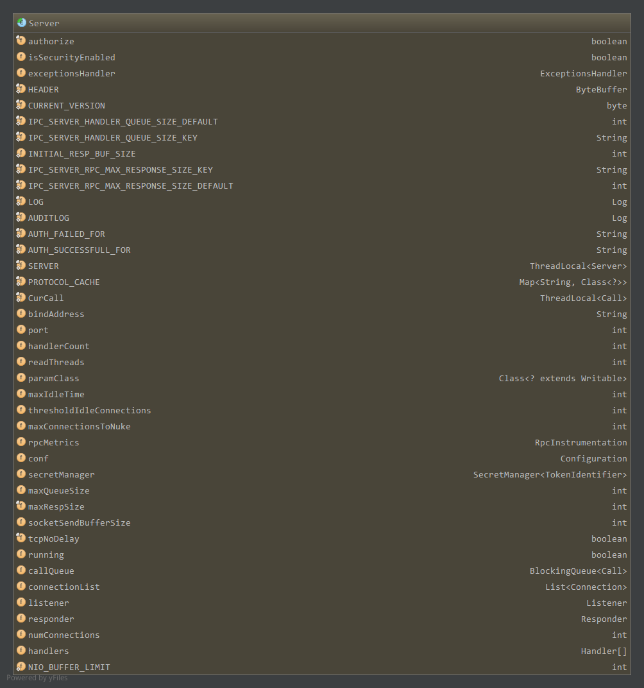
HEADER,保存魔数hrpc，连接建立时客户端发送一个魔数到服务器，用于判断客户端魔数是否为hrpc；CURRENT_VERSION,当前版本号4。连接建立时客户端先写魔数，然后是一个字节的版本号，一个字节的鉴权方法，再接着便是连接头信息了；IPC_SERVER_HANDLER_QUEUE_SIZE_KEY，配置项ipc.server.handler.queue.size，默认100，处理器队列大小；IPC_SERVER_RPC_MAX_RESPONSE_SIZE_KEY，配置项ipc.server.max.response.size，默认1024*1024(1MB)，响应器大小；SERVER,TODO：用途PROTOCOL_CACHE，键为协议名，值为对应的协议类，客户端发送过来的是协议名，查找配置conf创建相应的类，保存在缓冲中；CurCall，当前处理的Server.Call，TODO:用途bindAddress，本地绑定的地址；port，本地绑定的端口；handlerCount,处理器个数；readThreads，处理到达调用请求的读操作线程数目；paramClass，客户端发送过来的参数类，即包含调用方法名，参数类型，参数值的序列化类，从Client可知为Invocation类；maxIdleTime,客户端断开连接后最大空闲时间，为客户端连接最大空闲时间ipc.client.connection.maxidletime的两倍，不过客户端连接最大空闲时间
没设置时默认10s，而服务器默认1s。TODO:区别，用途thresholdIdleConnections，最大空闲连接数目，大于此值时对空闲连接进行清理；maxConnectionsToNuke，清理空闲连接时，一次最多清理的数目；rpcMetrics，统计信息；conf，配置；maxQueueSize,maxRespSize，TODOsocketSendBufferSize,socket发送缓冲大小；tcpNoDelay,Nagle算法使能；running，是否运行；callQueue，生产者-消费者模型使用的阻塞队列，由监听器listener生产，处理器handler消费。队列中元素对应一个远程方法调用，监听器读取
到一个远程方法调用请求后封装成一个Server.Call对象，放到该队列中，由处理器线程进行处理；connectionList,当前的连接；numConnections连接数目；listener，监听器；handlers，处理器数组；responder，响应器；
包含的内部类如下。
Server.Listener
监听器，监听到来的连接，监听器中主要有Accept和Read操作。Accept操作接受到来的连接并创建相应的SocketChannel，Read操作主要由Listener
的内部类Reader负责，首先读取魔数，版本号以及鉴权方法验证，然后读取连接头，创建指定协议的连接。接下来便是读取到来的远程调用请求了，对每一个请求封装
成一个Server.Call放到Server的callQueue队列中，然后由处理器负责处理。
主要成员属性如下:
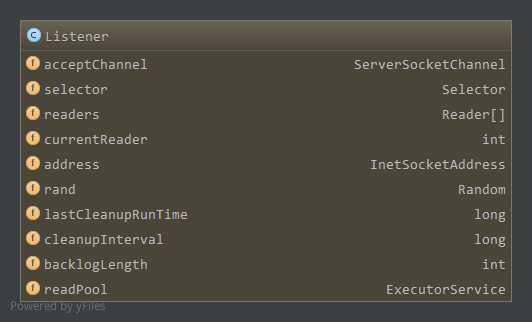
acceptChannel，服务器的ServerSocketChannel；selector，用于注册accept操作的选择器，这里accept和接收调用请求的read操作的选择器是分开的，接受调用请求的read操作注册对应的选择器
在Listener.Reader中，Reader负责读取调用请求；readers，读取调用请求的线程，数目为Server的readThreads；currentReader,目前使用的Reader线程在readers数组中索引；address，本地绑定的地址；lastCleanupRunTime，上次空闲连接清理的运行时间；cleanupInterval，空闲连接清理周期；backlogLength，服务器端等待accept的连接数；readPool，创建Reader线程的线程池，固定大小线程池；
监听器创建时，将acceptChannel注册到selector中，且注册的操作为OP_ACCEPT。同时创建相应数量的Reader线程，每个线程关联一个选择器对象。
启动时，在线程中循环读取selector中已选择键集，对每一个到来的连接，执行doAccept创建连接相应的SocketChannel对象，从readers中选择
下一个(currentReader)Reader，将该SocketChannel注册到对应的Selector中，注册的操作为OP_READ。
同时，Reader线程的run函数中读取关联Selector的已选键集，对应SocketChannel上可以读时，执行doRead读取到来的数据(先是魔数，版本，鉴权方法，
连接头，然后才是请求的远程调用)进行处理。
Server.Handler
处理器，处理callQueue中待处理的调用请求。处理器没有相关成员属性，循环在线程中读取阻塞队列callQueue的调用请求，调用本地相关实现方法
进行处理，处理结果放入相应连接(Server.Connection)的响应队列responseQueue中。若连接响应队列只有一个待发送的响应，则直接在本线程
(handler)中直接处理，而不是由响应器进行处理，避免了线程切换。否则本线程不予处理，等待响应器进行处理。每次处理时，若响应数据没有全部发送
完，则放到相应队列首等待下一次继续发送，同时对应的通道在响应器的选择器中注册写操作。
Server.Responder
响应器，循环读取选择器中已选键集，若某个通道可写，则往通道中写响应数据，同样的一次没写完全部数据的，再次放回响应队列的队首下次处理，这里便
不需要注册选择器的写操作了，因为已经注册过了。
因此，通道的写操作在选择器上的注册只会发生在处理器中，对应的通道第一次没有写完所有的响应数据时，在选择器中进行注册写操作。之后只需要将相应
已经有返回值的Server.Call添加至该连接的响应队列即可。(一个连接对应一个通道，因此只需注册一次)
成员属性如下:
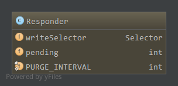
writeSelector，为通道注册写操作的选择器；pending，当前正要注册到选择器上的通道数；PURGE_INTERVAL,清理空闲连接的周期，15min；
Server.Call
为客户端远程调用在服务器端的实体，监听器listener处理完连接头后便是正常的调用请求数据，每一个调用请求数据发送的格式为:长度+客户端Call id(也将是服务器端Call id)+Invocation序列化数据
因此，相应的listener读取正常请求数据也是长度，再读取id，然后读取Invocation数据。最终通过读取的id和Invocation创建Call对象，创建的Call对象
放入Server的callQueue中，等待处理器处理。
Call成员属性如下:
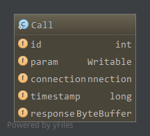
id，与客户端一样，作为该调用的标识，不过客户端是通过成员counter递增而来，而服务器端则是客户端发送过来的id；param，同客户端一致，为Invocation类；connection，为服务器端该Call对应的连接；timestamp,该Call创建的时间戳；response，对应的响应，处理完由Call的setResponse填充；
Server.Connection
对应服务器端的一个连接，连接的建立在客户端的setupConnection发起，而在服务器端由listener中selector接收连接，相应的在doAccept
中，ServerSocketChannel accept后得到一个SocketChannel，该SocketChannel关联新创建的连接。
Connection成员属性如下:
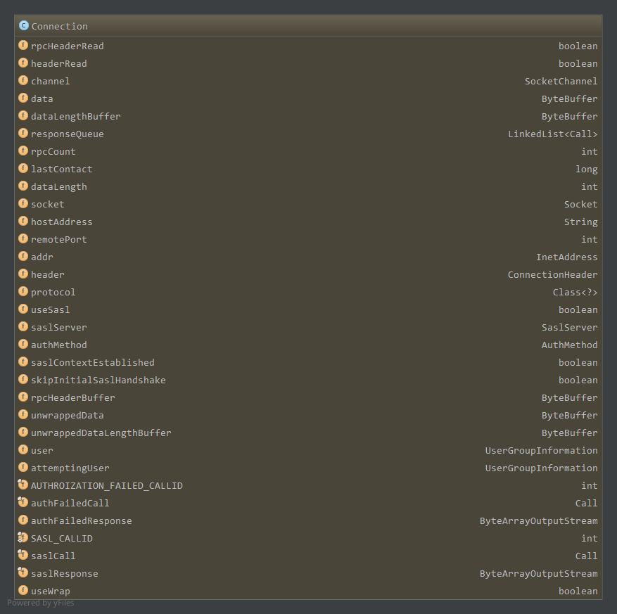
rpcHeaderRead,如前描述，建立连接时，先发送4个字节的魔数hrpc，1个字节的版本号(当前为4),1个字节的鉴权方法码，服务器端首先要验证
魔数和版本号是否一致，然后根据不同的鉴权方法验证是否由权限执行该调用，该成员为true时表示已经验证了，否则没验证需要验证；headerRead，如前所述，建立连接时，发送完上述所说的rpcHeader后，便是发送连接头ConnectionHeader了，格式为”长度+ConnectionHeader序列化数据”
，该成员为true表示已经接受了连接头并做了相应检查，否则应该接收连接头并检查；channel，对应的SocketChannel，响应通过该通道送回客户端；data，数据缓冲区，用于接收实际的调用请求数据；dataLengthBuffer，数据长度缓冲，4个字节。rpcHeaderRead为false时，读到该缓冲区的是魔数hrpc(刚好4各字节)，接下来应该读取两个
字节数据到rpcHeaderBuffer中。否则为接下来应读取的数据长度，接下来的数据读取到data缓冲区中，data缓冲区长度为dataLengthBuffer的值；responseQueue,一个连接的响应队列，handler处理完后，Call中response有值了，放入相应队列中等待发送到客户端；rpcCount,当前正在处理的RPC请求量；lastContact，该连接上上一次网络活动时间；dataLength，读完rpcHeader后，开头的4个字节为接下来要读取的数据长度，对应dataLengthBuffer的值；socket，该连接SocketChannel对应的Socket；hostAddress，看注释:1
2// Cache the remote host & port info so that even if the socket is
// disconnected, we can say where it used to connect to.即保存了客户端的主机和端口信息；
addr，socket对应的IP地址；header，反序列化客户端发送过来的连接头ConnectionHeader；protocol，该连接对应的协议，由连接头可知协议信息；useSasl，是否使用Sasl(简单认证与安全层)，鉴权相关；autoMethod，与客户端对应，包括SIMPLE,KERBEROS,DIGEST三种方式；rpcHeaderBuffer，2个字节的缓冲区，用于保存rpcHeader的版本，鉴权方法两个字节；user,与客户端对应，客户端发送过来的用户和用户组信息；AUTHROIZATION_FAILED_CALLID,-1。鉴权失败时的返回相应，客户端收到该响应时致命错误，将关闭客户端连接；authFailedCall，鉴权失败对应的Call对象；autoFailedResponse，鉴权失败响应序列化对应的流；
RPC.Server继承自Server，其中有具体的处理远程调用的方法call实现，具体见RPC。
RPC
RPC在Client和Server的基础上实现了Hadoop的RPC，包含客户端获取动态代理方法getProxy，获取客户端方法getClient以及获取服务器方法getServer，大部分都是静态方法，成员属性除了日志对象外，也只有保存所有客户端的CLIENTS:1
private static ClientCache CLIENTS=new ClientCache();
相关类如下:
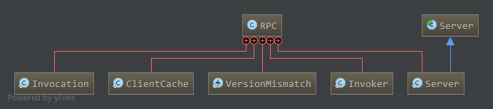
含有以下内部类。
RPC.Invocation
作为Client.Call对象的param成员类型，包含了一个远程调用的方法名，参数类型，参数值等信息，成员属性如下:
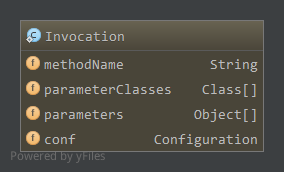
methodName,该调用的方法名；parameterClasses，调用方法参数分别对应的类型；parameters，调用方法的参数值；conf，配置；
RPC.ClientCache
缓存所有客户端，当需要获取一个客户端时，先从该缓存中取，没有再创建并放入缓存。唯一成员属性:1
private Map<SocketFactory, Client> clients = new HashMap<SocketFactory, Client>();
键为客户端使用的Socket工厂，值为客户端。一般来说，客户端由valueClass即调用结果反序列化类和使用的Socket工厂决定，而目前valueClass
只有ObjectWritable，即服务器端响应封装成ObjectWritable，客户端响应的也只能构建ObjectWritable反序列化。因此基本上一个Socket工厂
对应一个客户端。因此这里维护了”Socket从厂-客户端”键值对。
RPC.VersionMismatch
版本不匹配，创建代理时，可决定是否检查客户端和服务器版本(VersionedProtocol中getProtocolVersion)，若不匹配，抛出该异常。
RPC.Invoker
为代理的调用处理器，成员如下:
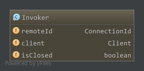
remoteId，该调用处理器负责转发的连接标识；client，所属客户端；isClosed，当前连接转发关闭；
通过代理调用协议中的方法时，转发到Invoker的invoke方法中，在invoke方法中由所属客户端client的call方法执行调用，打开连接(如果还没打开)
,发送头数据，然后发送调用数据。
RPC.Server
org.apache.hadoop.ipc.Server的子类，成员属性如下:
instance，协议实现类的实例，客户端的远程调用最终受理对象；verbose,详细信息；
作为org.apache.hadoop.ipc.Server的子类，增加了协议实现类的实例对象，由客户端传过来的协议，方法名以及参数信息，最终通过该实例调用指定
方法。
在Server的handler中对每一个Call会调用Server的:1
public abstract Writable call(Class<?> protocol, Writable param, long receiveTime) throws IOException;
方法，param对应为客户端包含调用方法，参数类型，参数值的Invocation类，而该方法在org.apache.hadoop.ipc.Server中没有实现，在RPC.Server中得以实现，从param中获取方法名，参数信息，通过反射调用实例instance上的方法返回。
总结
一般来说，客户端通过RPC.getProxy创建指定协议的动态代理，服务器端通过RPC.getServer创建服务器对象，然后服务器start启动相关线程。
客户端
通过代理调用协议中方法时，会转发到代理的调用处理器RPC.Invoker的invoke方法中。在invoke方法中，将要调用的方法，参数信息封装
成Invocation对象，传入调用处理器所属客户端Client的call方法中执行调用。
在call方法中，如果缓存中没有到服务器的连接Connection则要创建连接，并发送rpcHeader给服务器进行验证以及鉴权，成功后发送连接头ConnectionHeader给服务器，发送成功后连接创建成功，鉴权失败时，服务器发送相应的响应，客户端视为致命错误，关闭连接，而缓存中有到服务器连接时直接复用。
连接创建成功后，便发送之前封装的Invocation对象给服务器，然后等待。这时，建立的Connection线程在等待读取服务器端的响应，读取到响应后
通知等待的线程，等待线程醒来后完成了远程调用，要么错误要么成功。
服务器端
服务器的handler线程监听到来的客户端请求，有请求到达时，accept创建相应的SocketChannel，并创建服务器端的Connection。
然后选择一个Reader线程，将该通道注册到该Reader上面的选择器上，注册读操作，因此接下来便由该Reader处理该通道上到来的读请求。
Reader上有读请求到达时，如果还没处理rpcHeader，先读取rpcHeader信息并验证以及鉴权，鉴权失败发送失败对应的响应，客户端会视为致命错误
从而关闭连接。成功后读取ConnectionHeader，并根据发送过来的协议初始化之前创建的Connection的protocol，该连接便处理该协议的请求。rpcHeader和ConnectionHeader都处理完后，接下来Reader处理的便是实际的调用请求了。
实际的调用请求，对于发送过来的Call id以及Invocation反序列化，然后创建服务器端的Call对象放到Server的callQueue中，等待handler处理。
handler每次从callQueue中读取一个未处理的Call，使用call方法通过反射最终调用实例instance上的对应方法，调用返回后返回值封装成ObjectWritable对象，保存在Call对象的response中，并将该Call放入对应Connection的响应队列responseQueue中。
若responseQueue中只有一个Call，则直接在handler线程中进行处理，将响应发送到客户端，节省了切换到responder线程的开销。
若一次性响应未发送完，则将Connection对应通道注册在responder的选择器中，注册写操作，等下一次通道可写时，由responder线程处理发送过程。
之后已经完成调用的Call因为对应的通道已经注册在responder上的选择器上了，只需添加到responseQueue中，无需再注册。
流程大致如上，具体见后源代码分析。
关系梳理
最后梳理下客户端Client，Connection，Call等关系。
RPC中CLIENTS保存了现存的客户端缓存，一般来说，客户端由valueClass即调用结果反序列化类和使用的Socket工厂决定，而目前valueClass
只有ObjectWritable，即服务器端响应封装成ObjectWritable，客户端响应的也只能构建ObjectWritable反序列化。因此基本上一个Socket工厂
对应一个客户端。所以，正常情况下，若创建代理时不提供SocketFactory使用默认的Socket工厂，则只有一个客户端。
一个客户端在成员connections中维护了多个连接Connection。一个连接由ConnectionId标识，由三元组<remoteAddress, protocol, ticket>
决定。因此对同一个用户来说，不同的协议或者不同的服务器地址都能得到不同的连接。
同样的，一个Connection下可以有多个Call，即用户对同一服务器下的同一协议的不同方法调用由一个连接管理。
这样看来，一个客户端里面可能维护了多个用户的连接，而一个用户可能有对同一个服务器不同协议的多个连接，也可能有对不同服务器同一个协议或不同协议
的多个连接，客户端下维护的连接数为成员refCount。而具体到一个连接，则管理了具体用户，具体服务器，具体协议下所有调用Call。
再来看看代理Proxy，通过RPC.getProxy获得的代理，其调用处理器Invoker管理了ConnetionId和所属的Client对象，因此一个代理只能
处理所属客户端client下的一个连接，如下:1
2
3
4public static VersionedProtocol getProxy(
Class<? extends VersionedProtocol> protocol,
long clientVersion, InetSocketAddress addr, Configuration conf)
throws IOException {
该方法为最简单参数的getProxy方法，创建的代理所属的Client使用缺省的SocketFactory，代理负责处理的连接，其服务器地址由addr指定，
使用的协议为protocol，用户信息为当前用户。